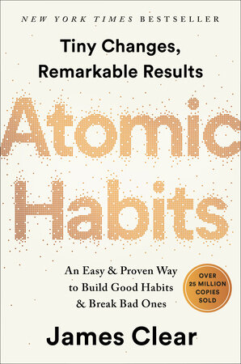

Motivation
Deep Work
An argument for protecting sustained concentration in a world full of interruptions.
Read the recommendation
Hardcover · ISBN 9780735211292
Publisher cover image
A practical framework for building helpful habits and making unhelpful ones harder to repeat.
Affiliate link · As an Amazon Associate I earn from qualifying purchases.
View this edition on Amazon ↗Links to the pictured edition. Confirm the selected format, availability, price, and seller on Amazon. Cover designs can vary between printings.
James Clear puts everyday systems at the center of habit change. The book explains how cues, surroundings, and small repeated actions can shape behavior. Its emphasis is on making the next useful action easier to take.
Readers who want a structured starting point for everyday routines, studying, or personal goals.
Choose something else if you want a memoir or an academic research survey rather than a practical self-improvement book.
Look for a change to your environment that makes a useful action easier to repeat.
AI-assisted overview based on published book information, not a firsthand review. Source information ↗
An argument for protecting sustained concentration in a world full of interruptions.
Read the recommendation